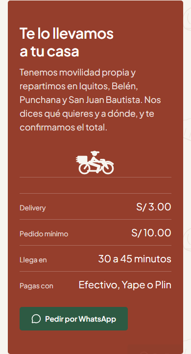
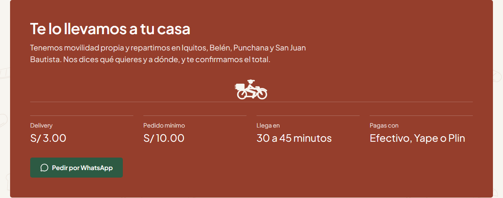
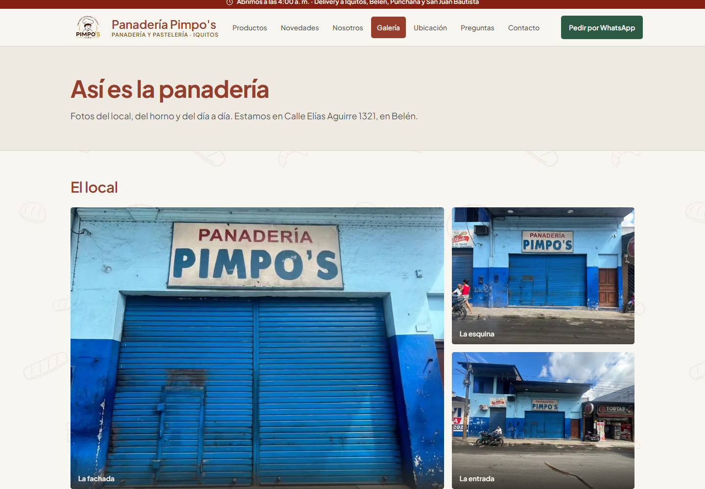
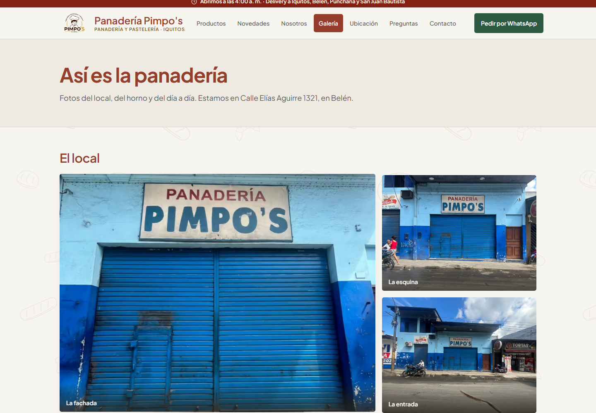

Delivery y fotografías
Implementación de los dos ajustes aprobados para PR #93. El video muestra el recorrido real en el build local; las fotos de delivery fijan su fotograma a los dos segundos para poder compararlas.
Volver al bloque 4 · Resultados y reproducción
Una pasada al aparecer




Zoom suave en fotografías




El zoom se reserva para cursor preciso y se desactiva con movimiento reducido. Se conservan textos, pedidos, precios, navegación y fotografías reales.